The Three of Us。
Family journeys, shared moments
The Three of Us is a family’s record of life on the road. New cities, a rest beside the street, a shared meal or a run beneath balloons: photographs hold moments of companionship, while hand-drawn maps connect the roads we have travelled together.
Always on the road, with one another to lean on.
We keep travelling. Running ahead, sitting down to rest, looking at each other and smiling. There is a long road ahead. We can lean on one another.
From coasts, parks and campuses to streets, bookshops and galleries, travel becomes part of our shared family life. The two people in front of the lens and the person behind it together make up the three of us.
Maps hold the routes; photographs hold our time together. Rather than listing every destination, we want to keep the moments when we walked together and paused together.
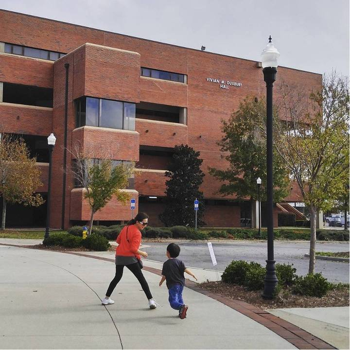
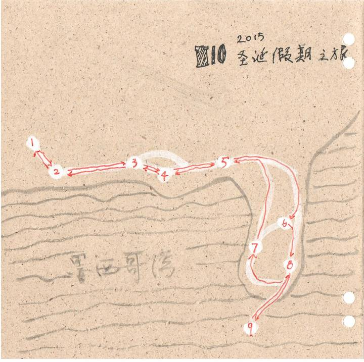
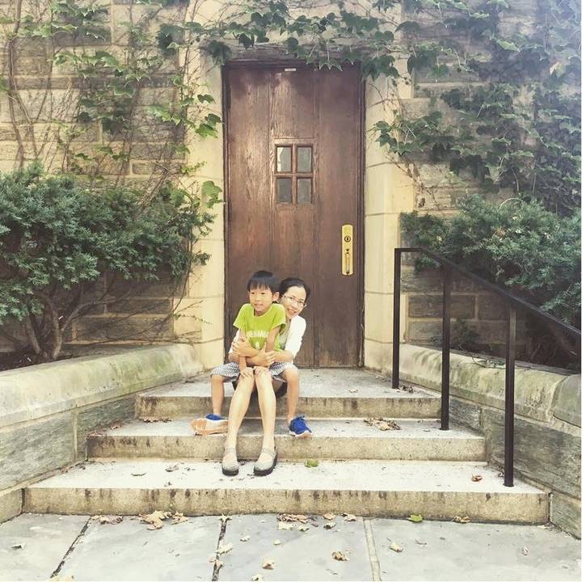
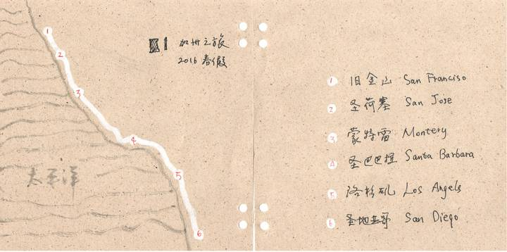
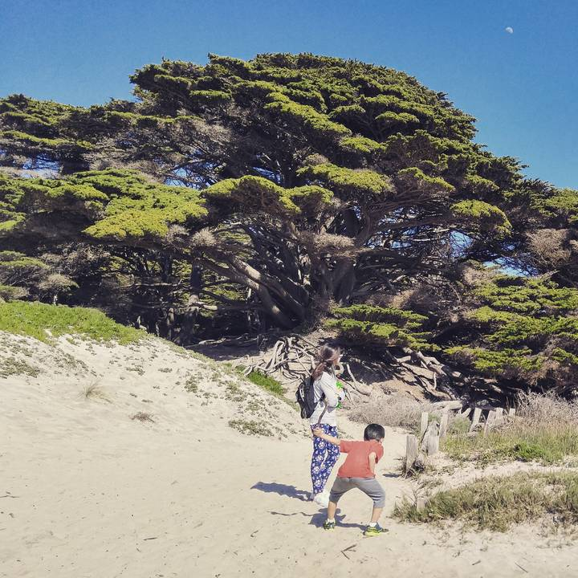
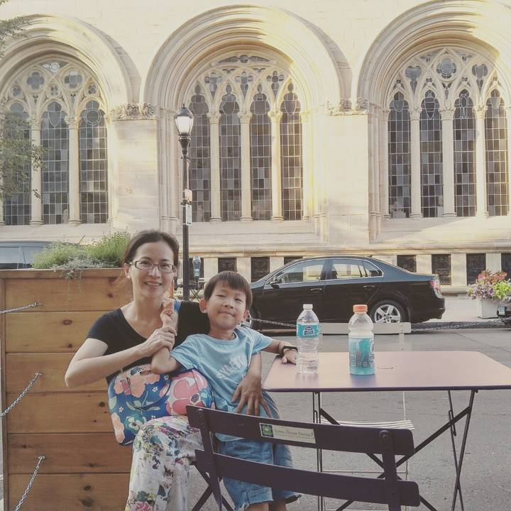
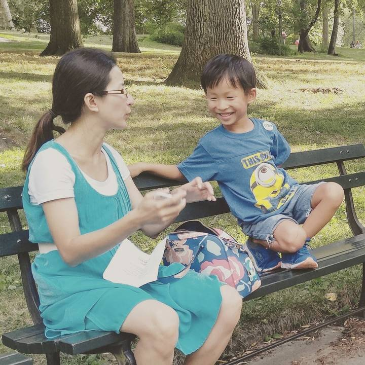
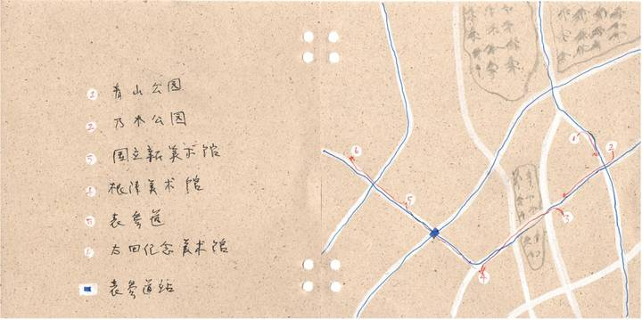
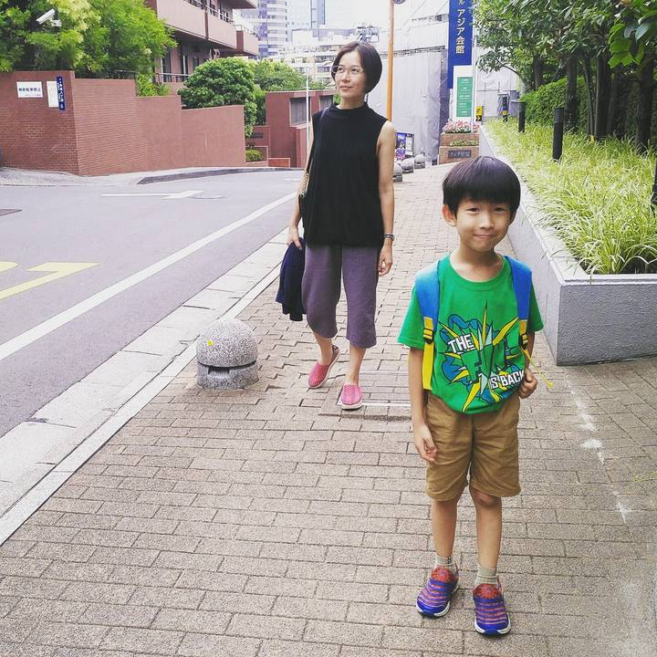
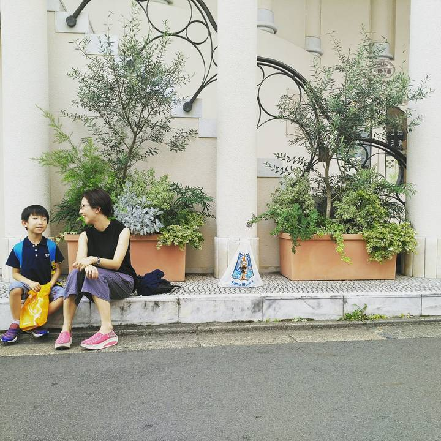
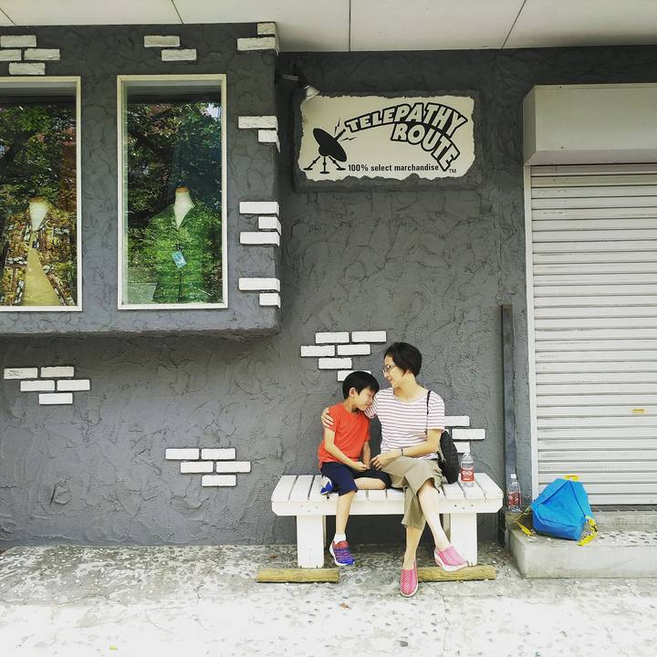
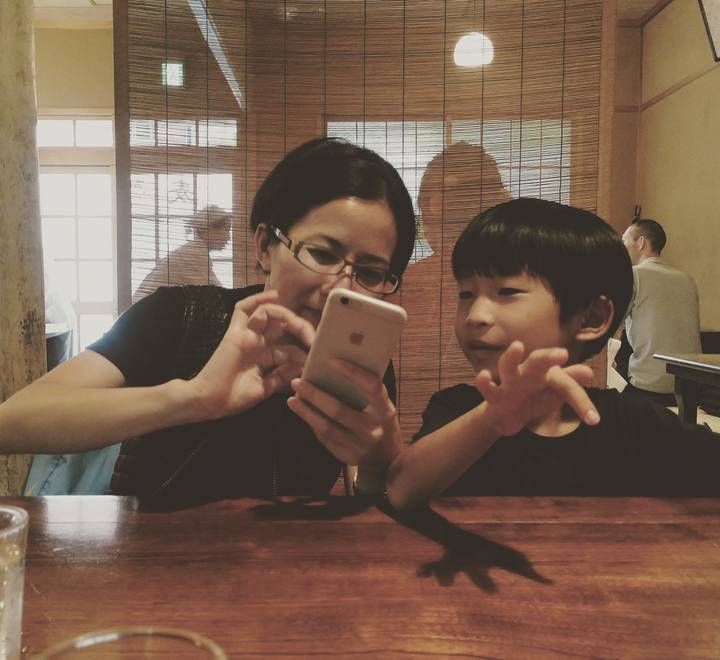
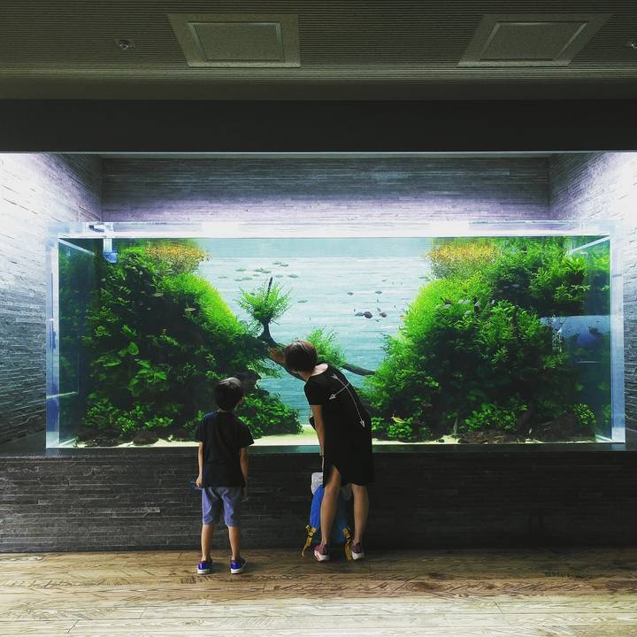
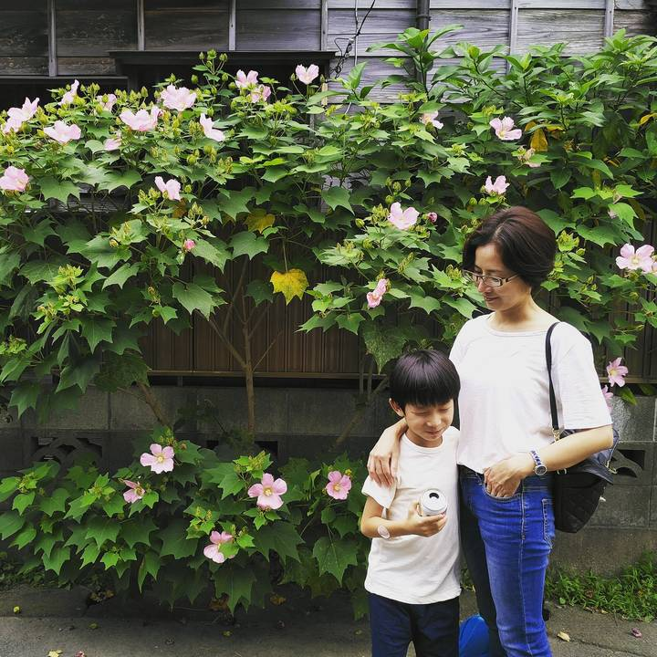
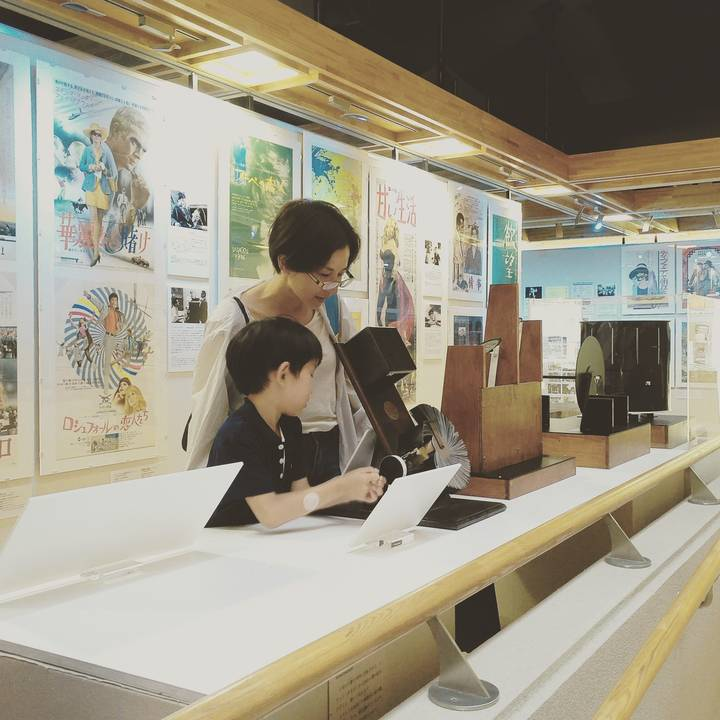
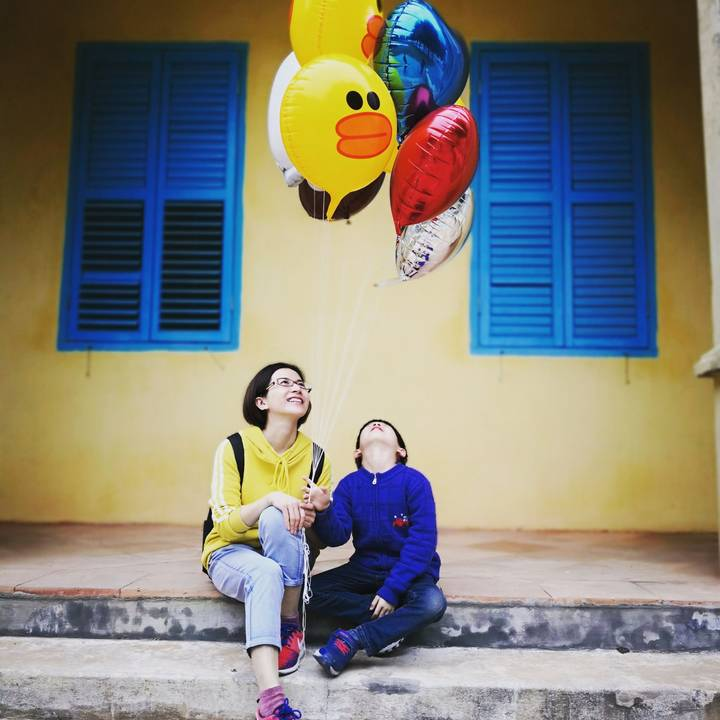
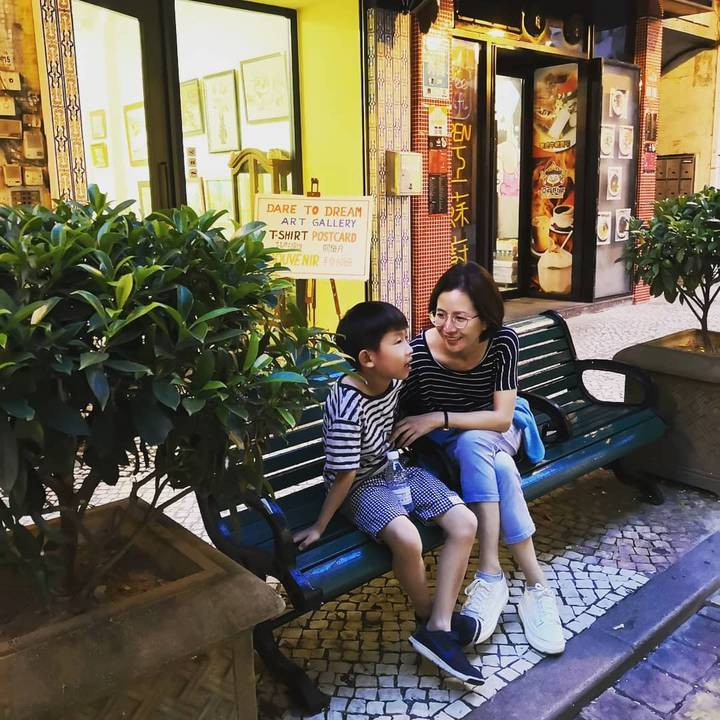
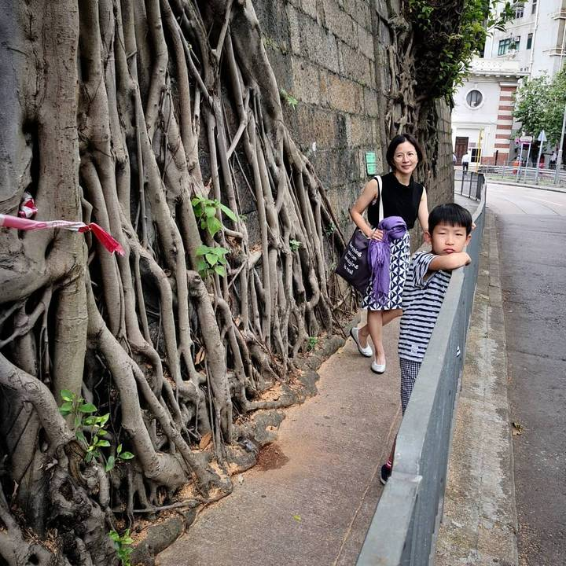
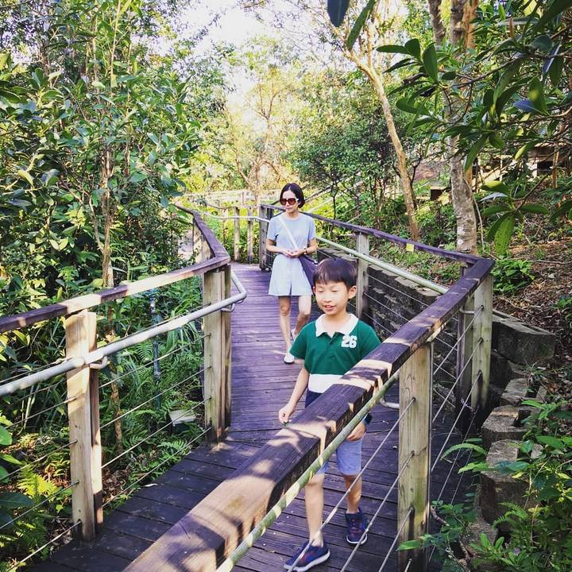
Selected from the original photographs and travel maps for The Three of Us. Opening words adapted from the family album’s preface. Photography and records by waanng.
Pause. Take another look.
Make a notebook for your journeys